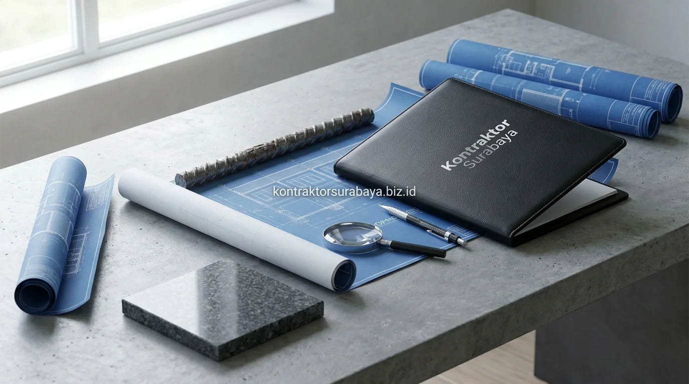

Pertumbuhan ekonomi dan sentra perniagaan di kawasan Mojokerto yang kian pesat—seperti di sepanjang koridor Jalan Majapahit, By Pass Mojokerto, Sooko, Puri, hingga kawasan perbatasan industri Ngoro—memicu tingginya minat investasi properti ruko (rumah toko) 2 lantai. Membangun ruko komersial yang fungsional dan bernilai jual tinggi membutuhkan perencanaan anggaran yang matang sejak tahap simulasi awal.
1. Faktor yang Memengaruhi Estimasi Biaya Bangun Ruko 2 Lantai
Luas bangunan, spesifikasi struktur komersial, jenis material finishing, dan aksesibilitas lahan adalah empat faktor utama yang membentuk total estimasi biaya pembangunan ruko 2 lantai di Mojokerto:
- Luas Total Bangunan (Gross Floor Area): Menentukan volume material semen, pasir, besi beton bertulang, bata ringan, dan durasi man-hours tukang secara kumulatif.
- Spesifikasi Beban Struktur Komersial: Dimensi pondasi footplat/bored pile, kolom pipih kaku, dan mutu beton K-250/K-300 yang disiapkan untuk menampung beban operasional usaha di lantai bawah dan hunian di lantai atas.
- Tingkat Kualitas Material Finishing: Pilihan lantai keramik standar vs granit tile 60x60/80x80 cm, kusen aluminium powder coating, dan sistem pintu folding gate / rolling door otomatis.
- Aksesibilitas & Logistik Lahan: Kemudahan akses manuver truk mixer ready mix dan armada material ke lokasi proyek di pusat kota vs area padat penduduk.
2. Komponen Utama dalam RAB Ruko 2 Lantai
Sebuah dokumen Rencana Anggaran Biaya (RAB) ruko yang profesional dan transparan membagi alokasi biaya ke dalam empat kelompok pekerjaan inti:
- Pekerjaan Struktur (35% - 40%): Galian tanah, pondasi cakar ayam / sumuran, sloof, kolom beton bertulang, balok lantai, dan plat dak cor beton lantai 2 serta dak atap.
- Pekerjaan Arsitektur (30% - 35%): Pasangan bata ringan hebel, plester acian, partisi gypsum, lantai granit, kusen jendela, pintu kaca tempered komersial, dan pengecatan eksterior tahan cuaca (weatherproof).
- Pekerjaan Mekanikal, Elektrikal & Plumbing (MEP) (15% - 20%): Instalasi listrik berkapasitas daya komersial (3500-7700 VA), instalasi titik lampu LED hemat energi, pipa air bersih, pipa air kotor, dan bak kontrol grease trap.
- Jasa Kontraktor & Biaya Overhead (10% - 15%): Manajemen proyek, upah mandor, sewa scaffolding, asuransi kerja, dan pembersihan lokasi (cleaning final).

3. Bagaimana Fungsi Ganda Ruko (Usaha dan Hunian) Memengaruhi Anggaran?
Kebutuhan spesifikasi berbeda antara lantai dasar yang memerlukan area terbuka (open-plan retail) dan lantai atas yang memerlukan sekat privasi hunian turut memengaruhi alokasi anggaran pada tiap bagian ruko.
Lantai dasar membutuhkan bentang bebas kolom yang lebar agar display barang dagangan dan lalu lintas kasir leluasa, sehingga membutuhkan balok transfer beton berkekuatan tinggi. Sementara itu, lantai dua dialokasikan untuk sekat kamar tidur, ruang keluarga, dapur bersih, dan kamar mandi pribadi yang memperbanyak volume partisi dinding, kusen pintu kamar, dan instalasi sanitari air hangat.
4. Perbedaan Estimasi Biaya antara Ruko Standar dan Ruko dengan Spesifikasi Premium
Ruko standar menggunakan material finishing dan MEP sesuai kebutuhan dasar fungsional, sementara ruko dengan spesifikasi premium menambahkan material kelas atas dan desain fasad arsitektural yang meningkatkan daya tarik bisnis:
- Ruko Standar Komersial (Rp 3,5 – 4,5 Juta/m²): Menggunakan lantai granit 60x60 cm polos, kusen aluminium standar 3 inch, pintu folding gate besi manual, cat dinding standar mutu, dan atap genteng spandek berperedam.
- Ruko Spesifikasi Premium (Rp 4,8 – 6,5 Juta/m²): Menggunakan fasad kaca curtain wall tempered, panel ACP (Aluminium Composite Panel) modern, lantai glazed porcelain tile motif marmer, pintu rolling door elektrik, instalasi pipa AC sentral, dan sistem smart lock digital.
5. Cara Menyusun Simulasi Anggaran Sebelum Konsultasi RAB Detail
Berikut adalah 4 langkah praktis bagi pemilik usaha atau investor di Mojokerto untuk menghitung estimasi kasar kebutuhan modal:
- Hitung Luas Total Bangunan: Contoh ruko dimensi 5x15 meter (2 lantai) = 75 m² x 2 = 150 m² luas bangunan.
- Kalikan dengan Standar Harga Borongan: 150 m² x Rp 3.800.000 (standar) = Rp 570.000.000 estimasi biaya fisik.
- Siapkan Dana Cadangan (Contingency 10%): Alokasikan Rp 57.000.000 untuk mengantisipasi kenaikan harga material atau penambahan utilitas khusus usaha.
- Perhitungkan Biaya Legalitas PBG: Alokasikan biaya retribusi Persetujuan Bangunan Gedung (PBG) fungsi usaha di Pemkab/Pemkot Mojokerto.
6. Kesalahan yang Membuat Simulasi Anggaran Ruko Meleset Jauh
Hindari empat kesalahan umum yang sering memicu pembengkakan biaya proyek ruko di tengah jalan:
- Menyamakan Biaya Ruko dengan Rumah Tinggal Biasa: Struktur ruko menahan beban lantai komersial yang jauh lebih berat dan membutuhkan volume beton serta besi tulangan lebih padat.
- Mengabaikan Kebutuhan Daya Listrik & Air Komersial: Biaya penambahan daya PLN industri/bisnis dan pompa pendorong sering terlupakan dalam hitungan awal.
- Tidak Menyiapkan Drainase & Grease Trap: Usaha kuliner atau cafe pada ruko wajib memiliki pengolah limbah lemak sebelum dibuang ke selokan kota.
- Membangun Tanpa Gambar Kerja Arsitek DED: Tanpa detail gambar teknis, tukang sering membongkar-pasang struktur yang mengakibatkan pemborosan material hingga puluhan juta rupiah.
"Keberhasilan investasi ruko komersial ditentukan oleh akurasi RAB struktur yang kokoh dan efisiensi tata ruang yang mampu menghasilkan arus kas bisnis maksimal."
Simulasi anggaran di atas hanya sebagai gambaran awal, sementara angka yang akurat baru dapat disusun setelah survei lahan dan penentuan spesifikasi final bersama tim RAB kami. Pelajari simulasi RAB lebih lanjut pada halaman jasa hitung RAB & estimasi biaya, atau lihat referensi proyek ruko lainnya pada galeri proyek kami.